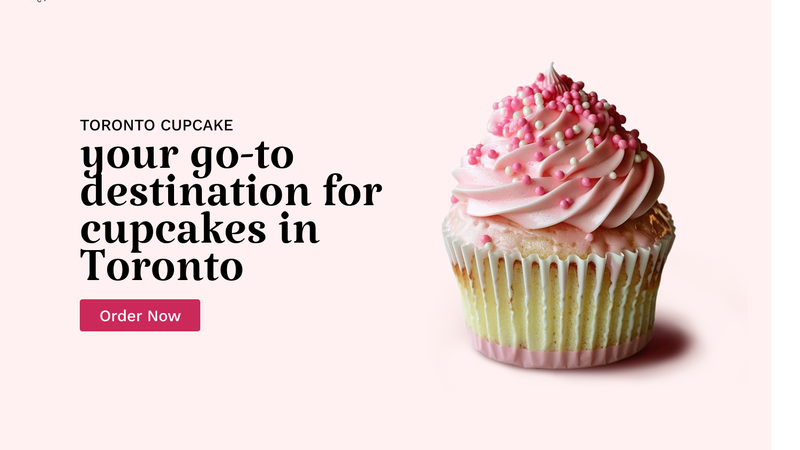
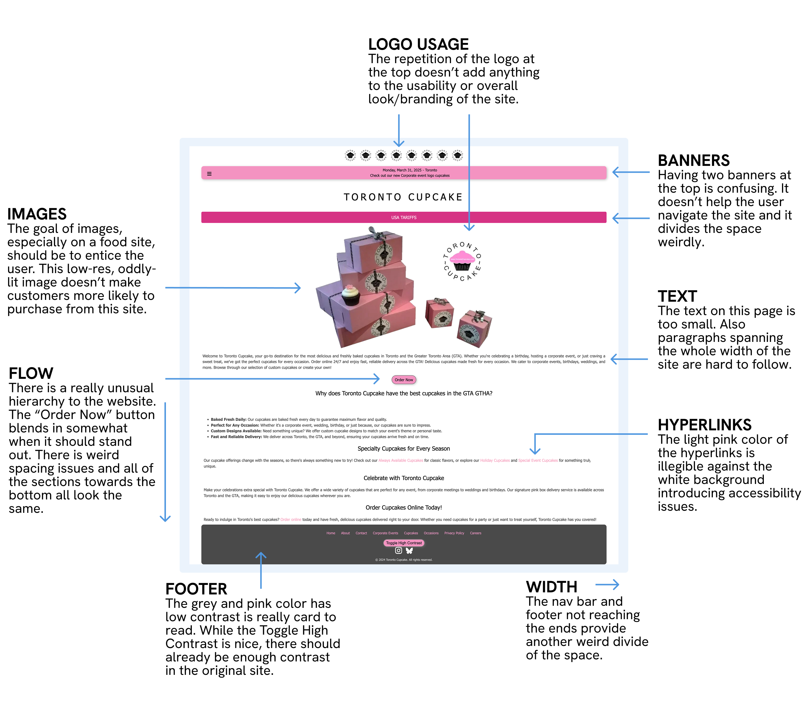
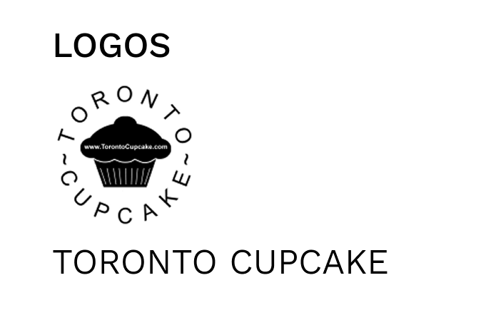
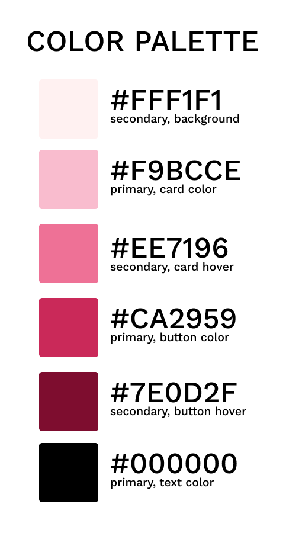
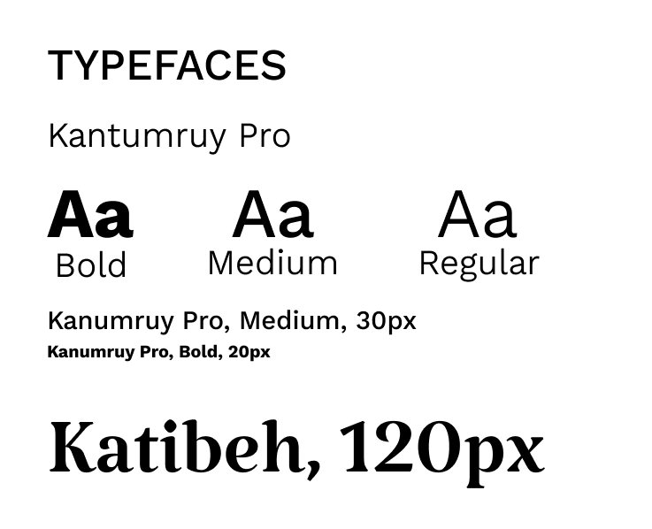
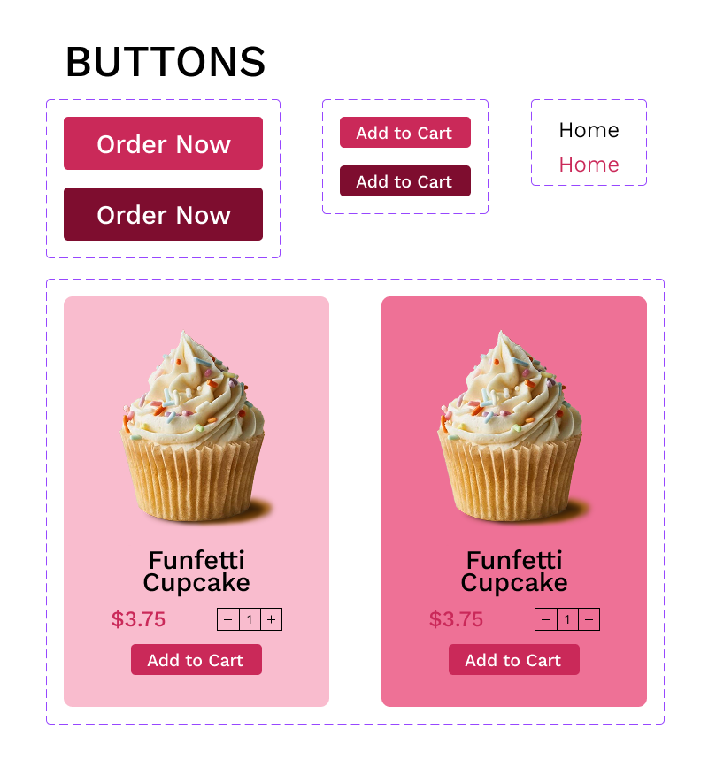
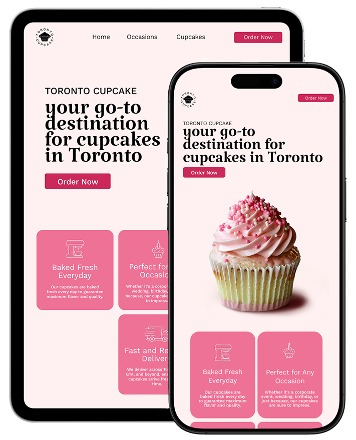

Toronto Cupcakes
For this project, I had to redesign an existing webpage with considerable usability or accessibility issues. I decided to redesign Toronto Cupcakes' website, a bakery and catering service in Toronto where customers can buy and order cupcakes. Currently, it's hard to tell what the company does at first glance of their website. My redesign addresses the issues with the current site and creates a stronger brand image for the company, while keeping all of the original information.
Toronto Cupcakes offers online ordering, delivery, and catering of specialty cupcakes across the Greater Toronto Area. Its homepage is the first place customers go to understand the brand and potentially order, so it should emphasize features like delivery, specialty cupcakes, and custom designs, and make it easy to place an order quickly.
While the site's goal should be to point users efficiently toward checkout, the current version doesn't do that effectively. It's hard to navigate, and the small text and low-contrast color choices make it inaccessible for some users. WebAIM found 23 issues of low-contrast color, mainly in the hyperlinks and footer.

Design an interface that attracts the attention of users and focuses it to drive purchases.
When designing the style guide, it was important to consider the color palette of the original website, and I found the pinks to be a good starting point to build from. All of the text is larger and easier to read, the buttons stand out more, and the hyperlink colors are deeper to help fix some of the accessibility issues mentioned above.

Kept the original logo since it's essential to the brand

Built from the original site's pinks, refined for better contrast

A serif for headlines, a clean sans-serif for body text

Bolder, higher-contrast buttons and cards
To make sure the new design held up across devices, I mapped out detailed layouts for desktop, tablet, and mobile, noting specific decisions like flexible grids, reordering content on smaller screens, and keeping key actions like "Order Now" accessible at every size.

The result is a responsive design with consistent branding and purpose across the whole page that addresses the original accessibility concerns. Check out the final webpage here.
Takeaways: This project helped me understand how important accessibility is. A webpage doesn't just need to be beautiful, it needs to be easy to navigate for people across many devices and abilities. Just because something is legible on a computer doesn't mean it will translate well to a phone or tablet. This project also made me incredibly hungry, but it was a lot of fun to design and code!

The final redesign, shown responsive on tablet and phone